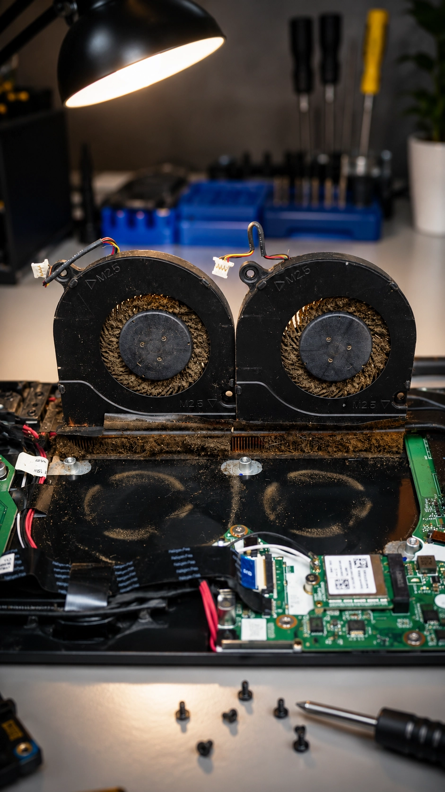

1. ตรวจเช็คสภาพเครื่องก่อนอัพเกรด (Before)
ลูกค้าส่งเครื่อง Acer Nitro 5 AN515 โน๊ตบุ๊คเกมมิ่งเข้ามาเพื่อต้องการอัพเกรดเพิ่มความเร็วการทำงาน และเพิ่มพื้นที่เก็บข้อมูลด้วย SSD M.2 ทางช่างได้ทำการเปิดฝาหลังตรวจเช็คฮาร์ดแวร์ภายในเบื้องต้น พบว่าบริเวณชุดพัดลมระบายความร้อนคู่และฮีตซิงค์ มีคราบฝุ่นสะสมและอุดตันเป็นจำนวนมาก ซึ่งเป็นสาเหตุหลักที่ทำให้เครื่องเกิดความร้อนสะสมสูง Fan หมุนทำงานหนัก และเครื่องช้าลง

2. ขั้นตอนการทำความสะอาดเต็มระบบ & ติดตั้ง SSD M.2 (In Progress)
ทางร้านได้ทำการถอดชุดพัดลมคู่และ ฮีตซิงค์ระบายความร้อนออกมาเพื่อทำความสะอาดฝุ่นอุดตันแบบเต็มระบบ (Deep Cleaning) เป่าฝุ่นและเช็ดทำความสะอาดใบพัดลมทุกซอกทุกมุม จากนั้นทำการเช็ดคราบซิลิโคนเก่าที่แห้งกรอบออก แล้วทาซิลิโคนระบายความร้อนเกรดพรีเมียมใหม่ นำชุดพัดลมประกอบกลับเข้าที่ ก่อนจะทำการติดตั้ง SSD M.2 ตัวใหม่เข้ากับช่อง M.2 Slot ของ Acer Nitro 5 เพื่อใช้งาน
3. ทดสอบการทำงานและความเร็วหลังอัพเกรด (After)
หลังจากติดตั้ง SSD M.2 และตั้งค่าระบบปฏิบัตการเรียบร้อยแล้ว ช่างได้ทำการทดสอบความเร็วในการอ่าน-เขียนข้อมูล (Read/Write Speed) ของ SSD M.2 พบว่าทำความเร็วได้อย่างเต็มประสิทธิภาพ บูตเข้า Windows ได้อย่างรวดเร็ว พร้อมทำการทดสอบ Stress Test เช็คระบบระบายความร้อน พบว่าอุณหภูมิความร้อนของ CPU และ GPU ลดลงอย่างเห็นได้ชัด เสียงพัดลมทำงานเงียบลง พร้อมส่งมอบเครื่องคืนลูกค้าให้ใช้งานได้ไหลลื่น ลื่นไหลเหมือนได้เครื่องใหม่!
คำถามที่พบบ่อย (FAQ)
ซ่อมโน๊ตบุ๊คเชียงใหม่ Computer Services
งานซ่อมได้มาตรฐาน อะไหล่แท้ตรงรุ่น ตรวจเช็คฟรี ประสบการณ์มากกว่า 10 ปี